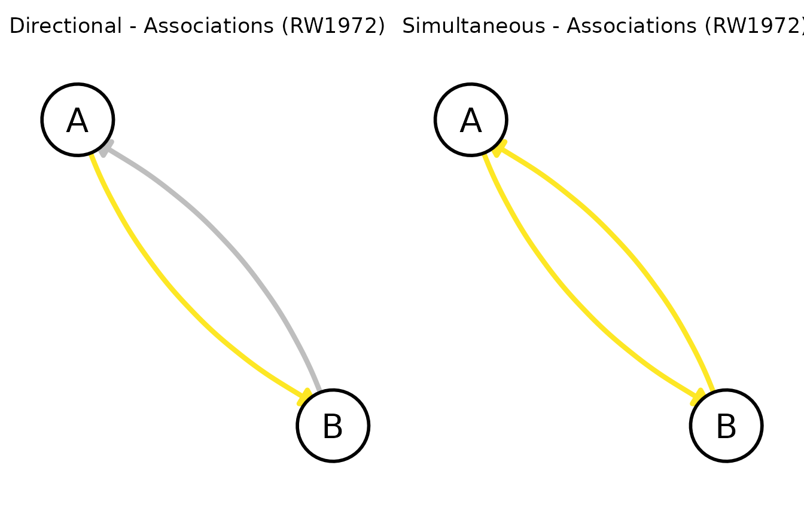
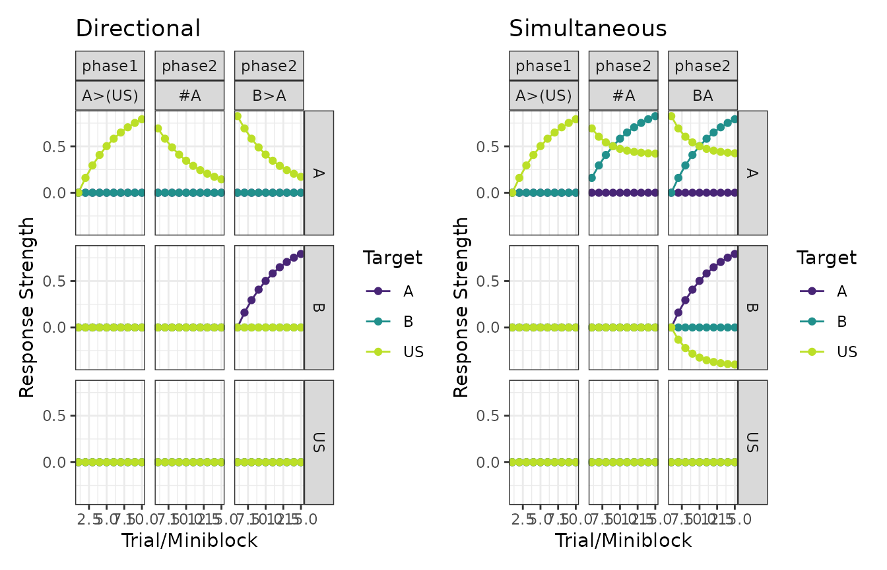

The behaviour of directional models
Imagine a procedure in which the offset of stimulus A is immediately followed by the onset of stimulus B. Though it would be reasonable to assume that the association from A to B might increase, it is not immediately clear what would happen to the “backward” association (from B to A).
Though some models propose that in most instances the backward
association will increase (e.g., Honey, Dwyer,
and Iliescu 2020), some models propose that the backward
association does not automatically increase. In calmr those
models are called “directional models”. Currently, calmr
deems the following models as directional:
Denoting directional trials
In calmr, we denote directional trials by using the
> symbol between any two (groups) of stimuli. Doing so
tells calmr to parse the trial into trial periods, one
followed after the other. As such, specifying a trial via
1A>B denotes the delivery of one trial in which stimulus
A appears first, and stimulus B appears second. A few variations on that
theme:
-
1ABdenotes a trial in which A and B are simultaneously presented (note there is no>symbol). -
1AB>Bdenotes a trial in which A and B are simultaneously presented in the first period, but only B remains in the second period. -
1A>B>Adenotes a trial in which A is presented first, followed by B, and then A again.
There is technically no limitation in the number of periods one could specify, but keep in mind that the number of periods will lengthen model runtime.
The behaviour of directional models
With the generalization of trials into trial periods,
calmr must choose how associations should be expressed and
learned across periods.
Expression
For expression, calmr assumes that all of the stimuli in
the trial will simultaneously contribute to the net
responding. Thus, both stimuli A and B in a 1A>B trial
will contribute to responding, even though they occur at different
times. Similarly, in a 1AB>B trial, both A and B will
contribute to responding, but B will contribute only once.
Learning
For learning, calmr takes no shortcuts, updating
associations between adjacent periods in the
predetermined order these periods appear. Take for example the
1A>B trial above. When using the RW1972 model (Rescorla and
Wagner 1972), we expect A to associate with B, because A is
followed by B. Mechanistically speaking, the association from A to B
strengthens whenever the presentation of A does not generate a strong
enough expectation of the B that immediately follows it.1
It is important to note that the second period of the
A>B trial also undergoes updating. As B is presented, it
might generate expectations if it has any associations with other
stimuli, but, because B is followed by nothing, all of those
associations will undergo extinction2.
A simple example
To exemplify all of the above, let’s consider how the RW model behaves under directional and simultaneous trials. We begin by defining a simple design:
library(calmr)
design <- data.frame(
group = c("Directional", "Simultaneous"),
phase1 = c("10A>B", "10AB")
)
parsed <- parse_design(design)
print(parsed)
# note: periods are recognized internally; see parsed@mappingLet’s run the model with default parameters and look at the associations in each group.
pars <- get_parameters(parsed, model = "RW1972")
exp_res <- run_experiment(design, parameters = pars, model = "RW1972")
patch_graphs(graph(exp_res))
As the graphs above show, only the A to B association is positive in the Directional group, but both the A to B and B to A associations are positive in the Simultaneous group.
Let’s have a look at the responses.
A more complex example
Let’s now consider a design in which stimulus A is followed by a US
in phase 1, but is itself preceded by stimulus B in phase 2 (with no
US). A second group will have the same treatment in phase 1, but B and A
will be presented simultaneously in phase 2. We will also add probe
trials of A (#A) to check how strongly A is associated with
the US in both groups.
design <- data.frame(
group = c("Directional", "Simultaneous"),
phase1 = "10A>(US)",
phase2 = c("10B>A/10#A", "10BA/10#A")
)
print(parse_design(design))
pars <- get_parameters(design, model = "RW1972")
exp_res <- run_experiment(design, parameters = pars, model = "RW1972")
plots <- plot(exp_res, type = "responses")
plots <- lapply(plots, function(x) x + ggplot2::ggtitle(unique(x$data$group)))
patch_plots(plots)
To appreciate the key difference between the two groups, focus on the
middle, topmost panel in each group. Those panels show how much
responding A produces on the probe trials (#A) during phase
2. Each line represents a different target stimulus.
When it comes to US-oriented responses, A in the Directional group
undergoes simple extinction. In B>A trials, A is not
followed by the US. This is not the case for the Simultaneous group. For
that group, the simultaneous nature of AB trials partially protects the
A-US association from extinguishing, by having B acquire an inhibitory
association with the US (see the center, rightmost panel for the
Simultaneous group above).
Conclusion
Directional models in calmr can have unexpected
behaviours, especially when compared to non-directional models. As such,
you must be careful when specifying the trial periods in your design.
Tinkering is your friend, but if you see any erratic behaviour, please
consider dropping me a line or opening an issue on GitHub.